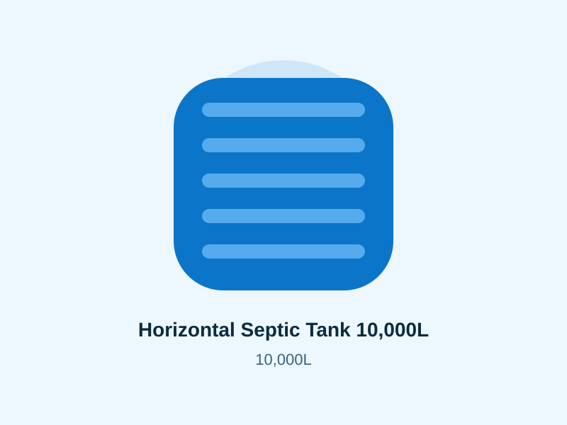

Septic Tanks
Horizontal Septic Tank 10,000L
Indicative price KSh 140,978. Confirm current price, availability, dimensions, technical specifications and delivery before ordering.

Product overview
Large horizontal septic tank for higher-demand properties. This page is designed for customers comparing the 10,000 litre size and planning a quotation in Kenya.
- Capacity
- 10,000 litres
- Indicative price
- KSh 140,978
- Product category
- Septic Tanks
- Dimensions
- Confirm current manufacturer dimensions before ordering
- Material information
- Moulded plastic product. Confirm current manufacturer material specification for the intended use.
- Availability
- Contact to confirm current stock
Where this size fits
Use the capacity as the starting point rather than the only buying criterion. Compare daily demand, reserve days, available installation space, access for delivery and the support required when the tank is full. For underground or septic products, obtain site-specific installation guidance before excavation or backfilling.
Before ordering
- Confirm the exact capacity and product name.
- Ask for current external dimensions and installation guidance.
- Confirm the latest price and stock.
- Send your county and town for delivery information.
- Confirm fittings, offloading and any installation work separately.
Nearby alternatives
Useful next steps
Read the installation guide · Check delivery · Compare tank prices · Compare tank sizes